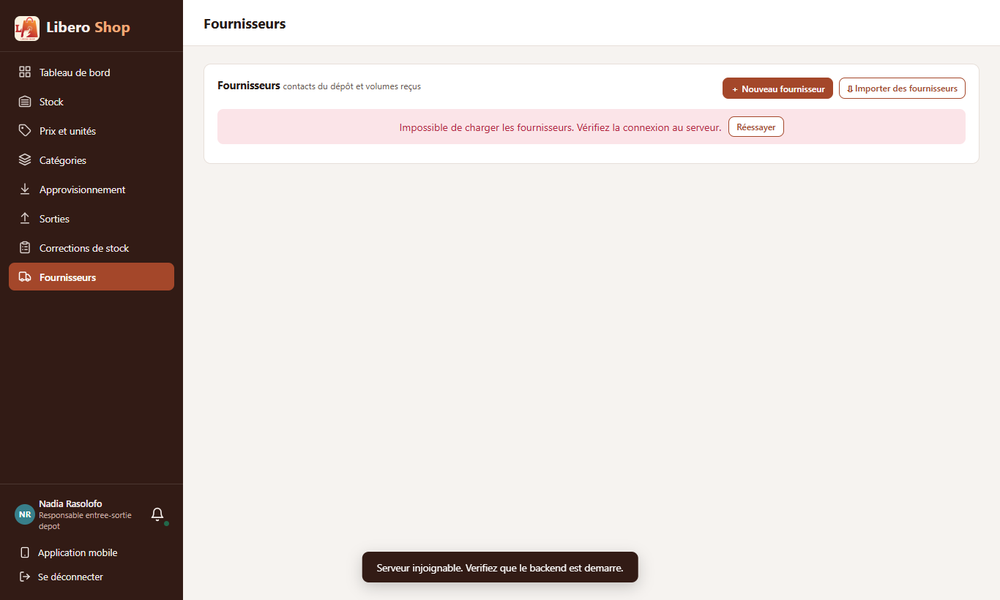
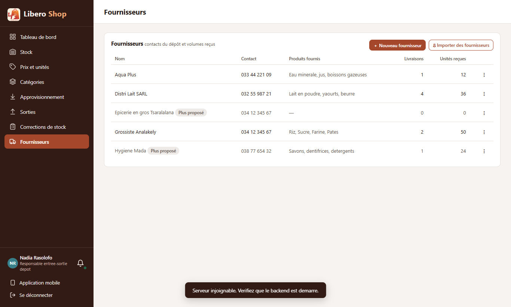

← Tous les comptes rendus de l'interface
UI-81Chargement, liste vide ou erreur : trois messages distincts
- Avant la réponse du serveur, les listes disent « Chargement… » et non plus « Aucune facture ».
- Si le serveur ne répond pas, la liste dit « Impossible de charger les fournisseurs » avec un bouton « Réessayer ».
- Si une mise à jour échoue alors que la liste était déjà affichée, elle reste à l'écran avec la mention « la liste affichée peut être ancienne ».
- « Aucun … » n'apparaît plus que quand le serveur a vraiment répondu une liste vide.
- Branché sur toutes les listes de factures et de stock (tableaux de bord compris), les fournisseurs et les utilisateurs.
1. Le problème
Une liste ne savait dire que deux choses : ses lignes, ou « Aucune facture ». Pendant le chargement, ou quand le serveur était éteint, on lisait donc « Aucune facture » : de quoi croire qu'une journée de ventes avait disparu.
2. Ce qui a été fait
Les listes savent maintenant si le serveur a déjà répondu (loaded) et si la dernière demande a échoué
(failed). Un petit composant commun, app-load-state, en tire la phrase à afficher. Les tableaux
de factures et de stock l'ont intégré : il suffit de leur passer la liste ([state]).
3. Le résultat en images
Nadia — responsable de dépôt (serveur coupé le temps de la capture)


4. À éviter / attendu
Serveur éteint : « Aucune facture pour le moment. »
« Impossible de charger les factures. Vérifiez la connexion au serveur. » [Réessayer]
5. Signalé, hors de ce point
- Le message du bas de l'écran « Serveur injoignable. Verifiez que le backend est demarre. » est sans accents et emploie « backend » : à reformuler pour la boutique.
- Les compteurs des tableaux de bord affichent 0 pendant le chargement ; la liste du dessous dit « Chargement… ».
- D'autres listes (rayons, prix et unités, bénéfices, argent en main) gardent l'ancien comportement : il suffira d'y
ajouter
app-load-state.
6. Tableau récapitulatif
| Fichier | Changement |
|---|---|
ui/…/core/api/load-state.ts | nouveau : ce qu'une liste sait de son chargement |
ui/…/core/api/api-resource.ts, core/store/live-list.ts | « déjà répondu » et « échec » en plus de « en cours » |
ui/…/shared/components/load-state.component.ts | nouveau : « Chargement… », « Impossible de charger » + Réessayer |
ui/…/shared/components/invoice-table.component.ts, stock-table.component.ts | entrée [state], « Aucun … » seulement après réponse |
14 écrans de factures et de stock, suppliers.component.ts, users.component.ts | passent leur liste |
| Règle | Test |
|---|---|
| « Chargement… » avant la première réponse, pas de « Aucun » | load-state.component.spec.ts |
| Rien de plus une fois la liste arrivée, même vide | |
| Échec : message et « Réessayer » qui redemande | |
| Échec d'une mise à jour : la liste reste, signalée ancienne | |
| Une réponse après un échec efface le message |
Tests : interface au vert (287 tests). Aucun changement côté serveur.